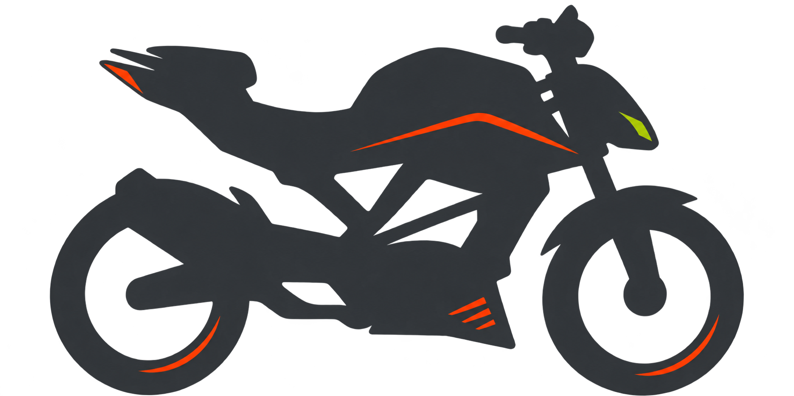
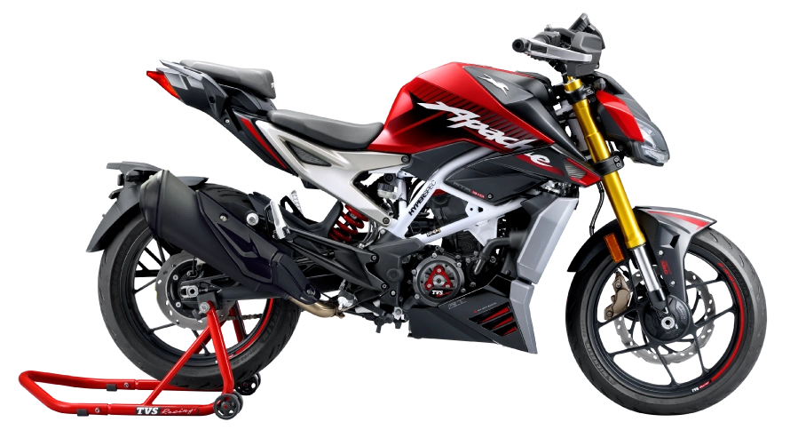

Live telemetry
Read bike notifications and decode known status fields into a clear ride view.

RTR LINKFAN-MADE · OPEN SOURCE
An independent community project exploring phone-to-bike Bluetooth, telemetry, and rider display features for Apache RTR owners. A companion to the official TVS app, never a replacement.
Unofficial project · Use at your own risk · Not supported by TVS

WHAT WE’RE BUILDING
Reverse-engineered with real Bluetooth captures and careful testing, then shaped into practical phone features.
Read bike notifications and decode known status fields into a clear ride view.
Explore supported bike display features such as custom greetings and digital documents.
Investigate phone status, ride controls, and Bluetooth behavior with transparent logs.
INSIDE THE APP
Preview the companion’s telemetry dashboard and Digi Docs workflow. These are illustrative UI previews, not screenshots from a released build.
Data values are intentionally blank. Actual telemetry appears only when the app is connected to a compatible bike.
APP AVAILABILITY
The iOS project is in development. Android source and installable builds are not available yet. Follow the repository for progress and release announcements.
FAN-MADE · OPEN SOURCE
RTR Link is an independent fan-made open-source project for Apache RTR owners. It is intended to complement, not replace, the official TVS app. It is not affiliated with, endorsed by, or supported by TVS Motor Company. The software is experimental, provided as-is, and used at your own risk. Compatibility and behavior may vary by bike and firmware. Follow the official owner’s manual, ride safely, and do not interact with the app while riding.
The motorcycle product image is sourced from the official TVS Apache RTR 310 website. TVS Motor Company retains rights to its image and trademarks; this project is not an endorsement or permission to reuse them elsewhere.
HELP SHAPE THE PROJECT
Use GitHub Issues to report a problem or request a feature. Include your app/platform and bike details, plus steps to reproduce the issue.
Please remove personal data from logs and screenshots. Never post pairing keys, VINs, caller details, ride locations, or document images.